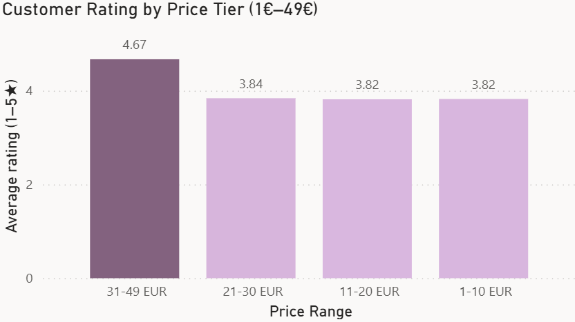

Wish: Can Cheap Go Global?
Exploring how low prices, global reach, and ads shape performance on Wish
📅 November 2025
Objective
This project analyzes Wish, a global e-commerce platform, through its summer 2020 product catalogue. The main goal is to understand whether Wish's low-price strategy really pays off, how trustworthy the platform is, and whether it still needs additional advertising to grow.
Dataset
The dataset contains summer products sold on Wish in August 2020, including product information, prices, ratings, shipping coverage and advertising flags.
📊 Source: Wish Summer Products 2020 dataset (Kaggle)
🔢 Records: ~1,300 products
🛠 Tools: Python (data preparation) & Power BI (visual analysis)
Using Python, I first checked for missing values and removed several columns with more than 90% nulls (for example urgency banners and profile pictures). Then I created new features such as:
- Price ranges (1–10 €, 11–20 €, 21–30 €, 31–49 €, 50+ €)
- Product categories based on keywords in the description
- Shipping reach (niche, popular, mainstream, global) based on number of countries
- Categorical versions of boolean fields like uses_ads_boosts and shipping_is_express
Main Insights
Pricing Low prices drive massive volume.
Products in the 1–10 € price range generated over 5 million units sold, making this the most profitable tier in absolute terms. The drop-off is steep: mid-range products sell a fraction of the volume despite higher margins.

Trust Trust is built through reviews, not perfection.
None of the top merchants reached a perfect 5/5 rating, but several achieved very high scores backed by 100+ reviews, which indicates a generally reliable marketplace. Volume of reviews matters more than a perfect score.
Quality Price ≠ quality, but it helps.
Higher-priced products tend to receive better ratings on average, but the cheapest items still perform surprisingly well, coming close to mid-range products in terms of customer satisfaction. The relationship between price and perceived quality is positive but not as strong as one might expect.
Reach Global reach with a long tail of niche products.
Products are shipped to between 6 and 140 countries. Even though only a small group is truly "global" (100+ countries), niche and popular items also achieve strong sales. The platform's infrastructure supports wide distribution regardless of product size.

Advertising Limited impact of ads.
Only a small share of products use ads, and in this dataset they do not show a strong advantage in either units sold or average rating. The lack of a clear gap between advertised and non-advertised items suggests that product-level ads may bring limited incremental value. Once users are on the platform, price appears to be the main driver of choice, with ratings and ads playing only a secondary role.
Conclusions
Finally, the platform appears to have already achieved strong global reach. Products are shipped worldwide, and in this dataset advertised products do not significantly outperform non-advertised ones in terms of sales or ratings. While this does not prove that ads are ineffective, it suggests that Wish may already be in a mature stage, where organic visibility and price positioning play a bigger role than additional paid promotion.
The results show that the low-price strategy clearly works: most sales happen in the lowest price range, and customers are still fairly satisfied with these products. When it comes to trust, merchants with many reviews and good ratings provide a solid signal for buyers, even if no one reaches a perfect score.
Finally, the platform appears to have already achieved strong global reach. Products are shipped worldwide, and advertising does not seem to significantly change performance in this dataset. This suggests that Wish is already in a mature stage, where organic visibility and price positioning play a bigger role than paid promotion.
Recommendations
- Expand express shipping to regions outside China to improve delivery speed and user experience.
- Diversify product origins to include more non-Chinese manufacturers and increase perceived quality and trust.
- Introduce local warehouses in major regions (e.g. Europe, North America) to reduce shipping times and costs.
- Add clearer product categories instead of relying only on keyword search, to improve navigation for new users.
Interactive Dashboard
Explore the full analysis in the interactive Power BI dashboard below, which summarises merchant reliability, price ranges, global reach, and the impact of advertising.